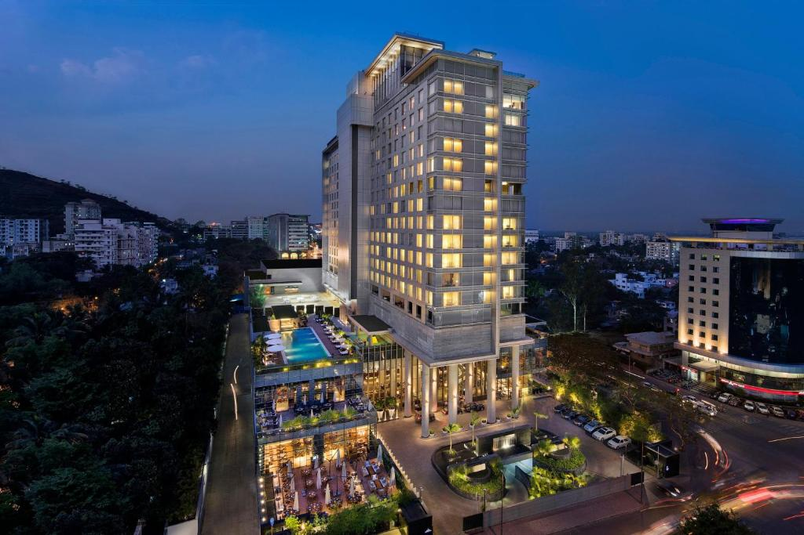
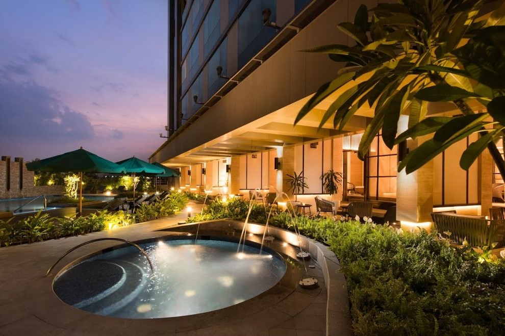

Hotels in Pune
Pune offers a wide range of hotels, from luxurious five-star properties to more budget-friendly options. Here are some of the top hotels in Pune:
The Orchid Hotel
Set in a striking modern building on 2.5 hectares of landscaped gardens, this upscale hotel next to the Shree Chhatrapati Shivaji Sports Complex is also 18 km from Pune's city centre.

JW Marriott Pune
Offering 5-star rooms overlooking the city, JW Marriott Pune features a spa, pool with bar and a rooftop restaurant. Providing free parking, it has 8 dining options. The property features a spa with 13 treatment rooms where the guests can head to for relaxation.
Conrad Pune
In a striking modern building in the central business district, this upscale hotel is 4 km from shops and restaurants in Ishanya Mall and 5 km from Aga Khan Palace.
Amanora The Fern, Pune
On sprawling grounds, this palatial hotel with a columned facade and a lake is 9 km from Aga Khan Palace, an 1892 landmark honouring Gandhi. Pune Airport is 11 km away.